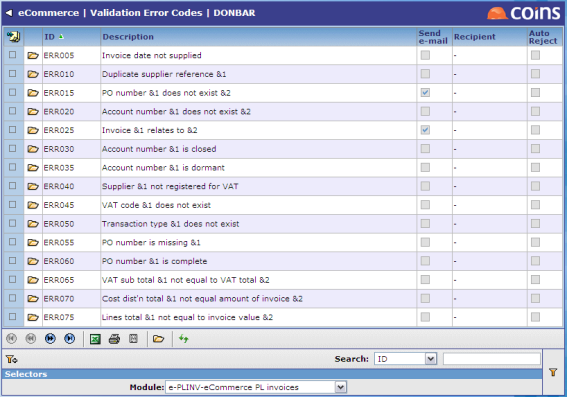
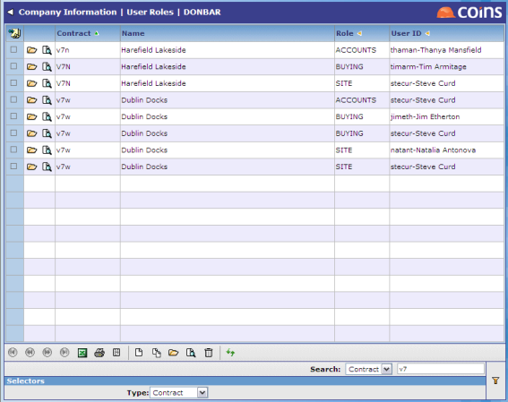
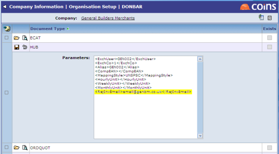

If invoices fail the validation, they can be automatically removed from the workbench, and a notification email can be sent to a designated recipient.
Configuring eInvoice Validation
Use Validation Error Codes to configure the handling of invoices with validation errors, for a range of pre-defined error conditions. Validation Error Codes is a non--specific configuration program. You may specify the following for each error code:
- Whether a rejection notification email should be sent;
- If so, the role that should use when deciding who it should send the email to;
- Whether the invoice should be automatically removed from the workbench.

The following recipient roles are permitted: Accounts, Buyer, Site or . When deciding who should receive a given notification, if the validation table role is Accounts, Buyer or Site will cross-reference this with the User Roles, giving priority to any -specific entry that may exist for that role. In each case, the first entry with an email address will be used (i.e. the same and role could have several entries for different users).

In the case of notifications to , will look for an office or -specific invoice rejection email address specified against the HUB document type in Organation Setup.

In both cases, if is unable to find a role-specific email address, the EC/MAILFROM parameter will be used. In all cases, the sender's address is taken from the EC/MAILFROM parameter.
In the unlikely event that all of the above attempts to derive an address fail, as a last resort will send an internal mail message to the current user to indicate that an error notification failure occurred during validation.
 (Review) button is pressed, or the Create Batch action is used.
(Review) button is pressed, or the Create Batch action is used.